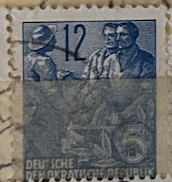
| SOURCE | TITLE| IMAGE MATCH | click to source page |
| www.ebay.com | GERMANY BERLIN STAMP MNH [SALE] [Choose 10pc of MINT is $3.5 ... | 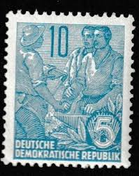 |
| www.ebay.com | Germany - DDR - 1954 Definitives - Five-Year Plan ... | 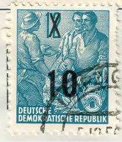 |
| www.amazon.com | Amazon.com: DDR 367 unmounted Mint/Never hinged ** MNH 1953 ... | 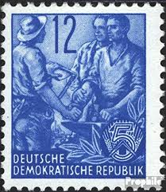 |
| commons.wikimedia.org | File:Stamps GDR, Fuenfjahrplan, 12 (10) Pfennig, Buchdruck ... | 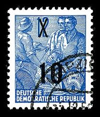 |
| www.ebay.com | Deutsche Foreign 10c Stamp Used - #A1149 | eBay | 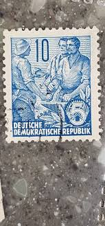 |
| stampedia.net | GERMAN DEMOCRATIC REPUBLIC 1955 10 pfennig Definitive Stamps ... | 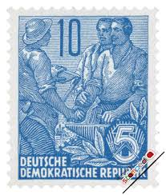 |
| www.nummusphila.fr | Definitive (Michel n. 578 B) - Germany - GDR 1957/59 | |
| picryl.com | 53 1953 stamps of the german democratic republic Images ... |  |
| www.old-stamps.com | Deutsche Demokratische Republik / DDR 1957 |  |
| www.amazon.com | Amazon.com: DDR 410 1953 Five-Year Plan (II) (Stamps for ... |  |
| www.stampcommunity.org | 1954 DDR Mi:dd44igXII - Stamp Community Forum | 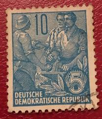 |
| www.ebay.com | DDR Stamp-Germany-1954 Five Year Plan Surcharge-10 over a 12 ... | 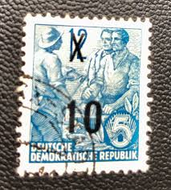 |
| www.shutterstock.com | Karnal Haryana India -august 6th 2025-closeup Stock Photo ... | 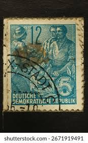 |
| worldstampsproject.org | Varieties of postage stamps of GDR: the Five Year Plan ... | |
| www.mysticstamp.com | S3 - 1956 50c Savings, Ultramarine - Mystic Stamp Company | 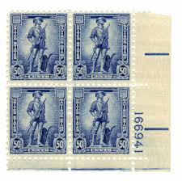 |
| www.hipstamp.com | DDR, East Germany, 1953-56, Five Year Plan, 10pf, used ... |  |
| www.alamy.com | Postage stamp from East Germany (DDR) in the Five-year Plan ... | |
| www.mysticstamp.com | 509//22 - 1941-42 Germany, Adolf Hitler Heads, Third Reich ... | 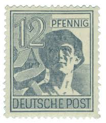 |
| lamasbolano.com | SELLOS ALEMANIA ORIENTAL 1957 - PLAN QUINQUENAL - 1 VALOR ... | |
| www.arpinphilately.com | Buy Germany East #227-30A - East Germany stamps (1955 ... |  |
| www.ebid.net | Great Britain 1938 King George VI KG VI 3d Used Stamp, on ... | 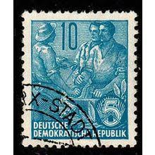 |
| worldstampsproject.org | Germany GDR – stamp booklets with plate flaws – World Stamps ... | 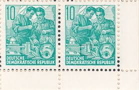 |
| www.old-stamps.com | Deutsche Demokratische Republik / DDR 1955 | 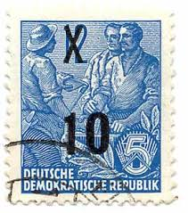 |
| www.shutterstock.com | 14+ Thousand Gdr/ Royalty-Free Images, Stock Photos ... | |
| www.kitantik.com | Almanya Pulu - Germany Stamp - Postadan Geçmiş Pul Filateli ... | 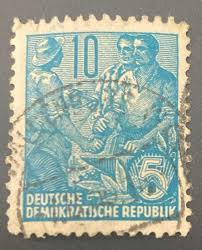 |
| www.germanstamps.net | Richard Wagner Issues | GermanStamps.net | 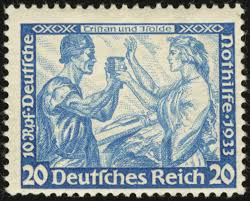 |
| www.etsy.com | Collector Stamps ~ East Germany (DDR) Scott #227-30A MINT ... | 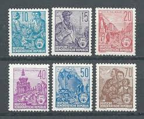 |
| www.amazon.com | Amazon.com: DDR 454 unmounted Mint/Never hinged ** MNH 1955 ... | 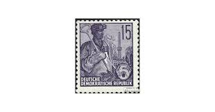 |
| www.alamy.com | Worker, peasant and intellectual, postage stamp, Germany ... | |
| colnect.com | Stamp: Bricklayer and farmer lady (Berlin(2nd Control Board ... | 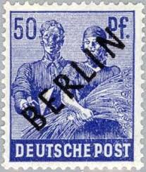 |
| www.buyhungarianstamps.com | 378-384A Yugoslavia - Types of 1950-1952, Set of 8 (MNH ... | 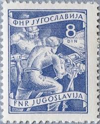 |
| aukro.cz | DDR 1954, pětiletka přetisk : dělníci a rolníci | Aukro | 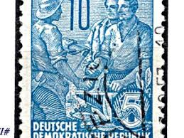 |
| www.stampcollectingblog.com | Five-year Plan definitive postage stamps of East Germany ... | |
| www.facebook.com | Take a look at my small collection of rare stamps from the ... | 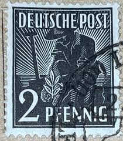 |
| commons.wikimedia.org | File:Deutsche Post 12 pfennig (1948).jpg - Wikimedia Commons | 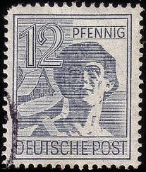 |
| www.istockphoto.com | 30+ Postage Stamp Germany Women Old Fashioned Stock Photos ... | 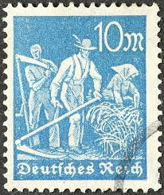 |
| www.hipstamp.com | Germany 1948, Leipziger Messe, Leipzig Fair, 50pf, sc#582 ... | 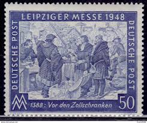 |
| stampaday.wordpress.com | Germany [Democratic Republic] #91 (1951) – A Stamp A Day | |
| www.mysticstamp.com | 1082 - 1956 3c Labor Day - Mystic Stamp Company | |
| www.alamy.com | Postage stamp from East Germany (DDR) in the Five-year Plan ... | |
| www.pvoller.net | German Postal History and More | |
| www.flickr.com | DDR | Jusotil_1943 | Flickr |  |
| www.etsy.com | Postage Stamps | 5 Year Plan, 60+ Years DDR Germany Stamps ... | 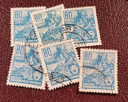 |
| heharris.com | 1920 5¢ Deep Blue Pilgrim Tercentenary Issue, Fine Used | 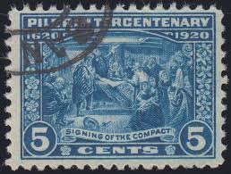 |
| www.ebid.net | Germany 1953 DDR Five Year Plan 80Pfg Used Stamp. on eBid ... | 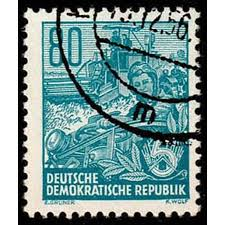 |
| www.stampcommunity.org | Need Help Identifying A Sideways Water Mark Please - Stamp ... | 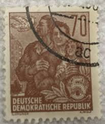 |
| www.shutterstock.com | Germany- Circa 1953 Postage Stamp Printed Stock Photo ... | 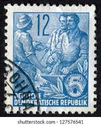 |
| www.youtube.com | Händel “Water Music Suite” Karajan & BPO, 1959 - YouTube | 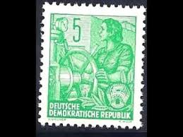 |
| www.alamy.com | Postage stamp from East Germany (DDR) in the Five-year Plan ... | 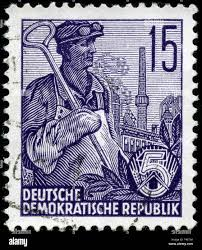 |
| postalmuseum.si.edu | 25c Jubile de L'Union Postale Universelle single | National ... | 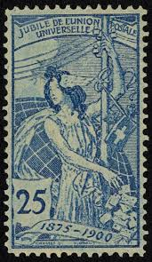 |
| www.shutterstock.com | Gdr Circa 1953 Post Stamp Printed Stock Photo 308898266 ... | 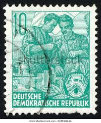 |
| www.facebook.com | so here a really rare Stamp DDR (East Germany) 1958 this ... | |
| www.usphila.com | US Stamps Prices Scott Catalogue #550: 5c 1920 Pilgrim ... | 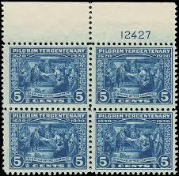 |
| commons.wikimedia.org | File:Deutsche Post - 24 Pf..jpg - Wikimedia Commons | 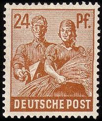 |
| www.linns.com | When a raging Rhine led to a set of flood-relief stamps | 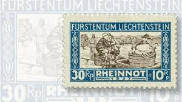 |
| www.etsy.com | Switzerland HELVETIA 25c Stamp; 1908, 318 Mil; Ultramarine ... | 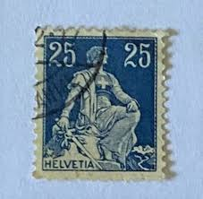 |
| worldstampsproject.org | Germany, Post-Currency Reform Issues – World Stamps Project | 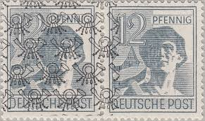 |
| russianphilately.com | Second World War Topical Stamps and Covers - Russian ... | 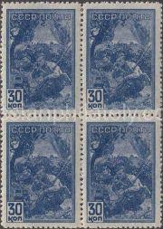 |
| thestampforum.boards.net | Germany - Booklet Panes | The Stamp Forum (TSF) | 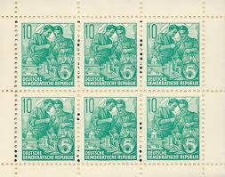 |
_Pfennig,_Buchdruck_1954,_1957.jpg){kind=link}
.jpg){kind=link}
{kind=link}